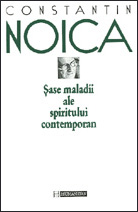
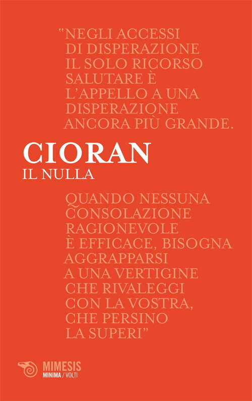
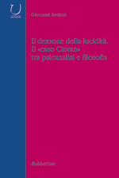
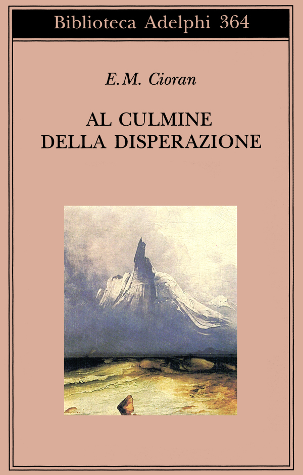
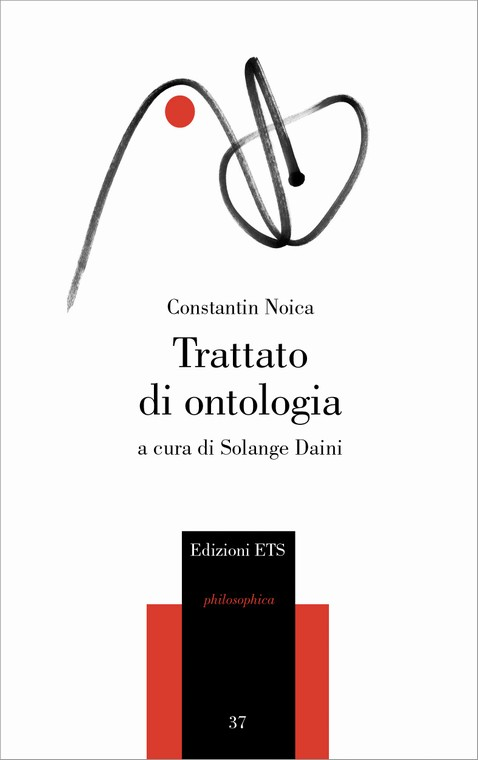
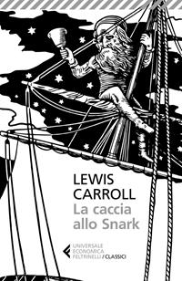
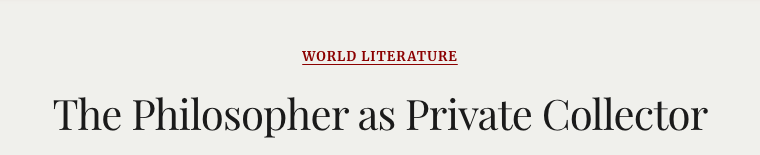
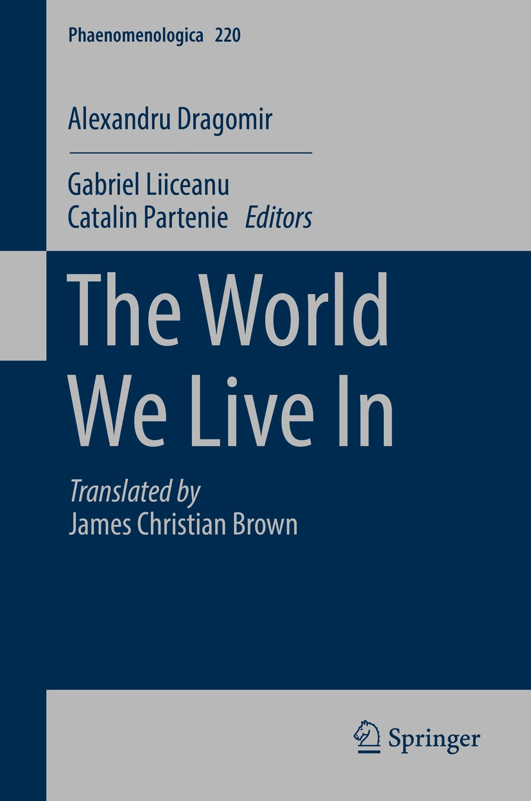

1:10:26 · 15 OPERE
Constantin Noica, "Sei malattie dello spirito contemporaneo".
Il filo del discorso
La lettura di Sei malattie dello spirito contemporaneo diventa una discussione sul rapporto fra cultura, libertà e forma della vita. Il relatore presenta Noica attraverso la sua amicizia con Cioran e il progetto ontologico che mette in relazione individuale, generale e determinazioni. Le malattie del titolo descrivono squilibri e orientamenti dello spirito: la scheda conserva questa dimensione filosofica, senza trasformarla in diagnosi psichiatriche di persone o gruppi. La ricostruzione bibliografica chiarisce alcuni passaggi del parlato. Il libro originale è del 1978; l’edizione Carbonio del 2017, tradotta da Mira Mocan, è distinta dalla precedente versione curata da Marco Cugno per il Mulino nel 1993. Le lettere a Minku sembrano identificare Il nulla, carteggio di Cioran con Marin Mincu, nel quale Noica è un argomento importante. Il demone della lucidità di Giovanni Rotiroti introduce invece una lettera critica di Noica sul giovane Cioran. La polemica sul plagio, aperta dal libro di Altieri, resta attribuita ai suoi autori e al relatore. Una lunga digressione contrappone la cultura come confronto pubblico alla sua riduzione a prestigio, consumo e addestramento. Vienna, la televisione, il conformismo evocato attraverso Asch e l’aforisma di Carroll sulla ripetizione diventano esempi di questa tesi. Il ricordo autobiografico del raccoglitore di stracci che conserva con cura i libri illustra un valore che può essere riconosciuto anche senza poter leggere. The Empty Campus e l’aneddoto su Gödel portano alla differenza fra titolo accademico, sapere ed etica; Freisler, Genesi e Gorgia ne mostrano diverse implicazioni. Le generalizzazioni sul controllo dell’informazione e sui sistemi politici non sono adottate come fatti già provati. La fotografia Solvay è ricondotta al 1927, correggendo il 1928 indicato nel discorso. Dragomir e The World We Live In offrono poi l’immagine di una filosofia coltivata in privato. La recensione autobiografica di Cătălin Partenie permette di ritrovare il viaggio nella neve con Noica e Dragomir e l’aneddoto su Heidegger e Hegel. Nell’ultima parte la discussione torna al testo: viene corretta la confusione fra il greco ὅρος, limite o termine, e ὄρος, monte, che non dimostra un errore della traduzione. Il primato attribuito all’empirismo anglosassone resta una lettura filosofica; Faraday e Maxwell non sono ridotti a semplici costruttori di macchine. Dante e l’episodio della pratica alla lavagna chiudono il tema di un sapere che comprenda prima di manipolare, fino alla figura noichiana del sé impazzito.
I libri nel discorso

Sei malattie dello spirito contemporaneo (Şase maladii ale spiritului contemporan)
Humanitas · edizione romena 1997 · ISBN 9732807318: Humanitas · edizione romena 1997 · ISBN 9732807318
Copertina autentica dell’edizione romena Humanitas, dichiaratamente diversa dalla Carbonio 2017 nominata nel video. Il volume italiano 2017 è tradotto da Mira Mocan, quello il Mulino 1993 era curato da Marco Cugno: non si presume identità della traduzione. Originale 1978, non immediato dopoguerra.
Titolo e autore introducono l’opera centrale, poi Carbonio 2017 e il Mulino 1993. Letture e commenti tornano soprattutto da 3314 e da 3845 secondi.
Passaggio 0:01 ↗ · Fonti e libro ↗
Il filosofo di Monziglia o dell’impostore Umberto Galimberti
Copertina: e4659, ebook 2016, edizione digitale distribuita da StreetLib, ISBN 9788822856296.
Immagine autentica dell’opera, controllata visivamente; l’edizione di riferimento non è attribuita al filmato.
Vincenzo Altieri e Il filosofo di Monziglia sono nominati nella discussione sulle accuse di plagio. Le accuse restano attribuite all’autore del libro e al relatore.
Passaggio 1:23 ↗ · Fonti e libro ↗
Il nulla. Lettere a Marin Mincu (1987–1989)
Identificazione probabile
Mimesis · Minima/Volti 53 · 2014 · ISBN 9788857519975: Mimesis · Minima/Volti 53 · 2014 · ISBN 9788857519975
Copertina autentica della raccolta, non delle singole lettere. L’editore descrive undici lettere e due testi; il carteggio include Noica fra i temi, non è un epistolario indirizzato a lui. Differenza fra paginazione editoriale 92 e catalografica 90 non risolta contando pagine mai scaricate.
Lettere a Minku pubblicate da Mimesis e sostegno di Cioran per Noica: convergenza sul carteggio con Marin Mincu, identificazione probabile per forma abbreviata e trascrizione automatica.
Passaggio 3:02 ↗ · Fonti e libro ↗
Il demone della lucidità. Il «caso Cioran» tra psicanalisi e filosofia
Rubbettino · Università · 2005 · ISBN 9788849810967: Rubbettino · Università · 2005 · ISBN 9788849810967
Copertina ufficiale del volume. La descrizione editoriale non autorizza diagnosi psichiatriche retrospettive di Cioran.
Giovanni Rotiroti, Il demone della lucidità e l’editore Rubbettino sono richiamati esplicitamente prima della lettera di Noica sul primo Cioran.
Passaggio 4:28 ↗ · Fonti e libro ↗
Al culmine della disperazione
Copertina: Adelphi · Biblioteca Adelphi 364, 1998 · traduzione Del Fabbro e Fantechi
Immagine autentica dell’opera, controllata visivamente; l’edizione di riferimento non è attribuita al filmato.
Al culmine della disperazione viene nominato come testo del giovane Cioran criticato da Noica nella lettera ricordata tramite Rotiroti.
Passaggio 4:49 ↗ · Fonti e libro ↗
Trattato di ontologia (Tratat de ontologie)
Edizioni ETS · 2007 · cura Solange Daini · ISBN 9788846717870: Edizioni ETS · 2007 · cura Solange Daini · ISBN 9788846717870
Copertina editoriale dell’edizione italiana verificata. Il video non stabilisce che questo esatto esemplare sia quello posseduto. Il primo volume Saggio sulla filosofia tradizionale non viene aggiunto senza una menzione propria.
Il trattato di ontologia di Noica è nominato introducendo il rapporto fra individuale, generale e determinazioni.
Passaggio 5:29 ↗ · Fonti e libro ↗
Minima moralia
Identificazione probabile
Copertina: Einaudi, 2015
Adorno e moralia accompagnano la tesi del declino dell’evidenza logica. Il titolo completo è abbreviato nella trascrizione automatica: identificazione probabile, luogo testuale esatto dell’aforisma da verificare.
Passaggio 15:19 ↗ · Fonti e libro ↗
La caccia allo Snark
Copertina: Feltrinelli, Universale Economica I Classici, 22 febbraio 2018, a cura e traduzione di Roberto Sanesi, testo inglese a fronte, 112 pagine; ISBN 9788807902925. Originale del 1876.
Copertina autentica Feltrinelli, bianco e nero con personaggio al timone e titolo leggibile. Il video non identifica questa edizione; il titolo inglese e il passo sono verificati indipendentemente.
Il poema di Lewis Carroll è richiamato con la massima sulla verità di ciò che viene ripetuto tre volte, riscontrata nel primo Fit; non è un libro di teoria della propaganda.
Passaggio 20:10 ↗ · Fonti e libro ↗
The Empty Campus
Copertina: Lulu · edizione inglese di riferimento
Immagine associata all’ISBN di riferimento e controllata visivamente; edizione e traduzione non identificate come quelle citate o lette nel video.
Il relatore nomina The Empty Campus nell’aneddoto su Gödel, titoli accademici e riconoscimento culturale.
Passaggio 32:16 ↗ · Fonti e libro ↗
Genesi
Copertina: Einaudi, I libri della Bibbia / Einaudi Tascabili, 2000; introduzione di Steven Rose
Copertina dell’edizione autonoma Genesi, nella serie I libri della Bibbia, con introduzione di Steven Rose. Edizione scelta come riferimento iconografico; nessuna edizione è confermata nel video.
Adamo, Eva e il frutto proibito introducono una lettura filosofica della scelta. Il testo biblico parla di frutto, senza identificarlo come mela.
Passaggio 37:51 ↗ · Fonti e libro ↗
Gorgia
Copertina: Gorgia, Bompiani, giugno 2001, a cura di Giovanni Reale, testo greco a fronte, 384 pagine, ISBN 9788845291111. Copertina ufficiale blu, bianca e verde acqua con titolo e autore; edizione di riferimento non identificata nel video.
Immagine autentica dell’opera, controllata visivamente; l’edizione di riferimento non è attribuita al filmato.
Il dialogo Gorgia è nominato nella riflessione sul sapere e sulla felicità del tiranno. Interpretazione del relatore, non citazione letterale certificata.
Passaggio 41:00 ↗ · Fonti e libro ↗
Fotografia di gruppo del quinto congresso Solvay (Bruxelles, 1927)
Identificazione probabile
Fotografia di gruppo del congresso Solvay del 1927: Bruxelles · quinto congresso Solvay · ottobre 1927 · fotografia di Benjamin Couprie
Riproduzione fotografica autentica del gruppo, acquisita da Wikimedia Commons e confrontata con il catalogo istituzionale. Non è la copertina degli atti. La scheda IAS indica diritti non conclusivamente determinati (In C-RUU); la fonte non attesta una licenza libera o il pubblico dominio.
Il relatore descrive la fotografia con Einstein, Bohr e Marie Curie e indica 1928. La composizione e il catalogo IAS identificano invece il quinto congresso Solvay 1927; immagine distinta dagli atti pubblicati nel 1928.
Passaggio 43:06 ↗ · Fonti e libro ↗
The Philosopher as Private Collector
Identificazione probabile
Intestazione della recensione dalla Dublin Review of Books. Autore e data sono verificati separatamente nella testata della pagina e non compaiono nell’immagine.: Dublin Review of Books, n. 96, gennaio 2018; immagine dell’intestazione della pagina attuale.
Non copertina autonoma, non frontespizio e non immagine del libro di Dragomir. Intestazione della pagina attuale; l’immagine non documenta la grafica del 2018. Autore e data sono riportati nella pagina.
Nel passaggio: recensione introdotta a 2803.44 s; rivista Dublin Review of Books a 2807.68 s; titolo del libro di Dragomir a 2819.68 s e Springer da 2825.80 s; episodio auto/neve da 2825.80 a 2859.16 s e aneddoto Hegel/Heidegger da 2868.89 a 2913.85 s. Titolo e autore della recensione non pronunciati.
Passaggio 46:47 ↗ · Fonti e libro ↗
The World We Live In (Crase banalităţi metafizice)
Springer · Phaenomenologica 220 · copyright 2017 · copertina inglese ufficiale: Springer · Phaenomenologica 220 · copyright 2017 · copertina inglese ufficiale
Copertina ufficiale ad alta risoluzione associata al DOI dell’eBook. Springer distingue eBook 15 dicembre 2016, hardcover 28 dicembre 2016, copyright 2017 e paperback 2018: non presentati come un’unica data di messa in commercio o formati identici.
Titolo inglese The World We Live In e Springer sono espliciti. Segue la testimonianza della recensione di Cătălin Partenie su Noica e Dragomir.
Passaggio 46:59 ↗ · Fonti e libro ↗
Divina Commedia
Identificazione probabile
Copertina: Giunti Barbera · Passepartout, 2021 · edizione di riferimento
I versi sull’inizio del racconto di Ugolino sono riconoscibili come Inferno XXXIII, 1–3, pur deformati nella trascrizione automatica.
Passaggio 1:03:17 ↗ · Fonti e libro ↗Fonti e approfondimenti (18)
- albert.ias.edu ↗
- atlas.perseus.tufts.edu ↗
- atlas.perseus.tufts.edu ↗
- catalogues.royalsociety.org ↗
- drb.ie ↗
- drdivagoscave.blogspot.com ↗
- ford.artifacts.archives.gov ↗
- histories.newschool.edu ↗
- humanitas.ro ↗
- library.si.edu ↗
- link.springer.com ↗
- opac.bibliotecabraidense.org ↗
- dhm.de ↗
- gutenberg.org ↗
- ias.edu ↗
- ias.edu ↗
- mimesisedizioni.it ↗
- romanian-philosophy.ro ↗